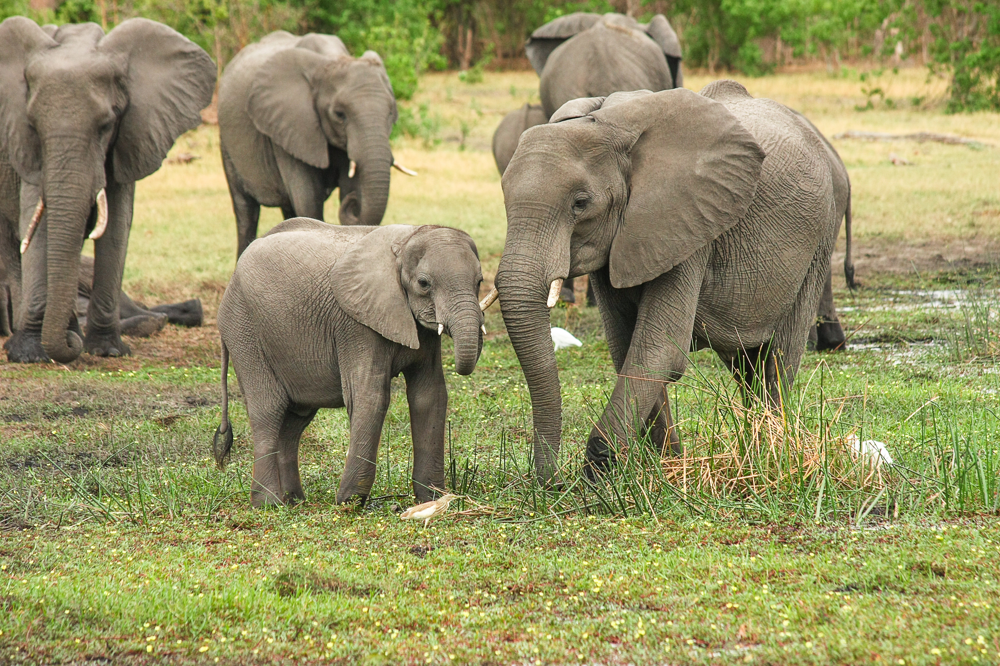
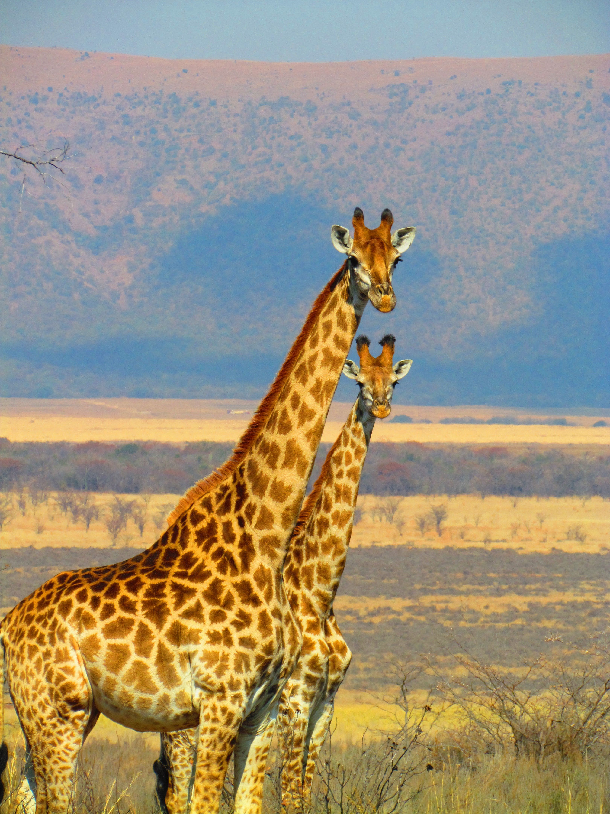
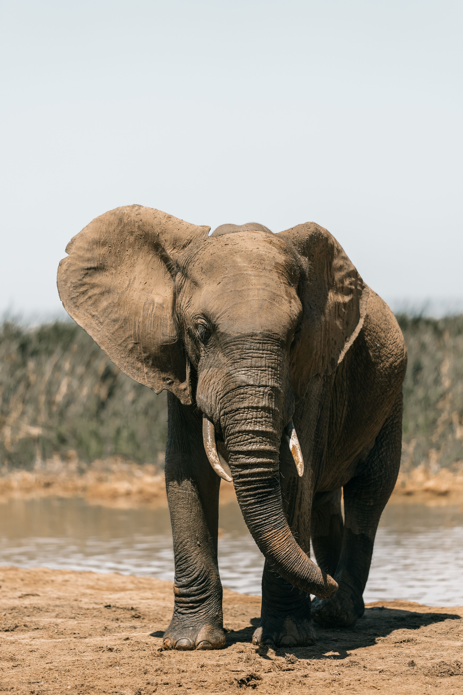
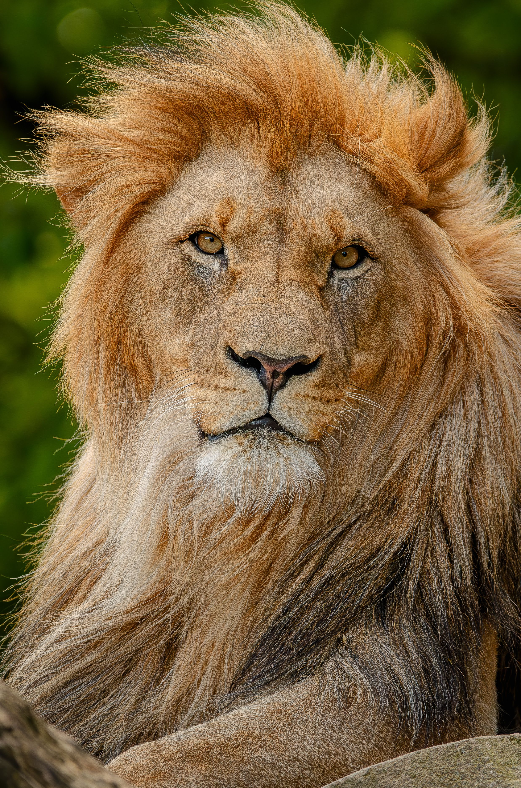
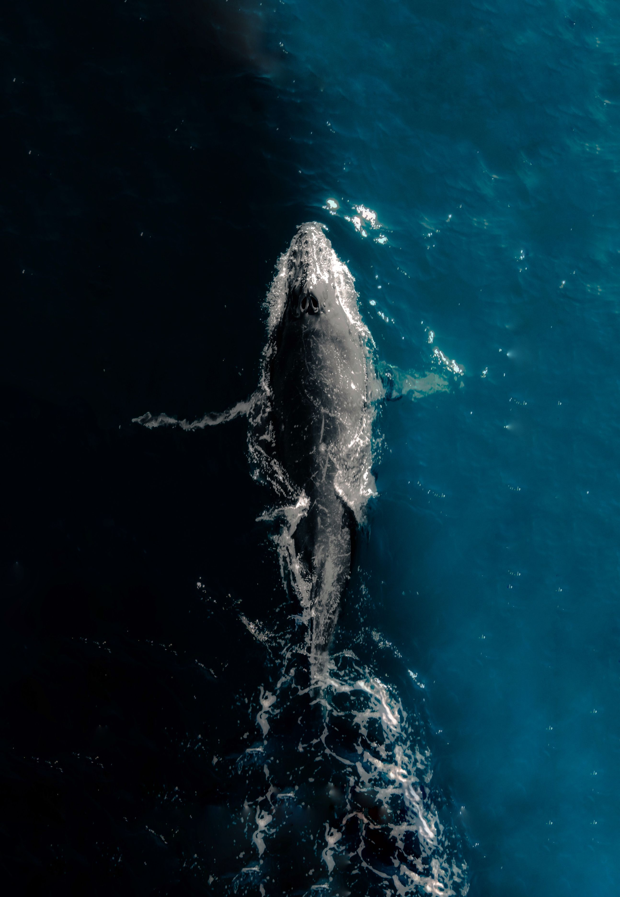
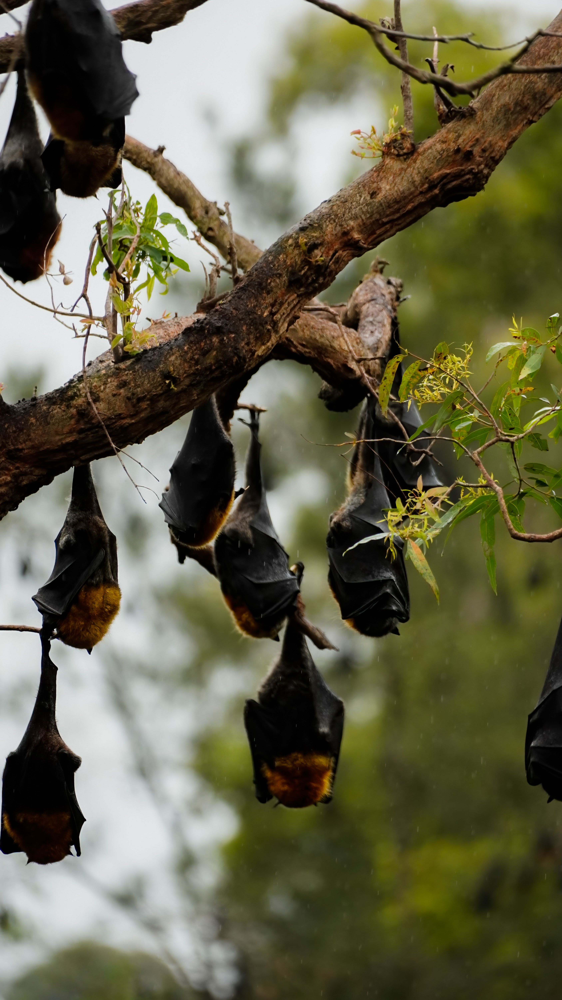

What are Mammals?
Mammals belong to the class Mammalia, representing some of the most advanced and adaptable creatures on Earth. They occupy nearly every major biome, displaying extraordinary diversity in size, behavior, and habitat.
Equipped with specialized physiological traits, they maintain internal body heat and nurture their young with direct maternal care.
Key Characteristics
1. Mammary Glands: Female mammals possess specialized glands that secrete milk to nourish newborns during their crucial early stages of growth.
2. Specialized Teeth: Unlike many reptiles or fish, mammals have distinct teeth types (incisors, canines, premolars, molars) tailored to specific diets.
3. Neocortex Brain Region: Possesses a highly evolved brain structure responsible for higher-level thinking, sensory perception, and learning.

Meet the Mammals
While thousands of species exist across the globe, here are four iconic and recognizable representatives of this diverse biological class.

African Elephant
The largest land mammal on Earth, known for its complex social structures and high intelligence.

African Lion
A majestic apex predator that rules the savanna, living and hunting cooperatively in prides.

Blue Whale
The largest animal ever known to have lived, gracefully navigating open global oceans.

Bat
The only mammals capable of true, sustained flight, often using advanced echolocation at night.

Where Do Mammals Live?
Mammals are remarkably versatile, having successfully colonized almost every corner of the planet. Because different species adapt to unique climates, you can find them across diverse ecosystems worldwide.
What Do Mammals Eat?
Feeding habits vary widely depending on tooth structure, habitat availability, and metabolic needs.
Herbivores
Animals like elephants, deer, and giraffes consume plants, leaves, and grasses exclusively, providing vital seed dispersal across ecosystems.
Carnivores
Predators such as lions, tigers, and wolves hunt other animals to secure high-protein energy required for active survival.
Omnivores
Species like bears, pigs, and humans maintain flexible diets, consuming both plant matter and animal proteins to maximize food survival.
💡 Did You Know?
Bats are the only mammals capable of true, sustained powered flight rather than just gliding.
Blue whale calves gain weight rapidly, drinking up to 150 liters of rich mother's milk every single day.
The tiny Etruscan shrew has a heart rate that can beat up to 1,500 times per minute!
Quick Facts
5,500+
Recognized mammal species globally
Worldwide
Found across all continents and oceans
Land & Water
Terrestrial, aquatic, and aerial environments